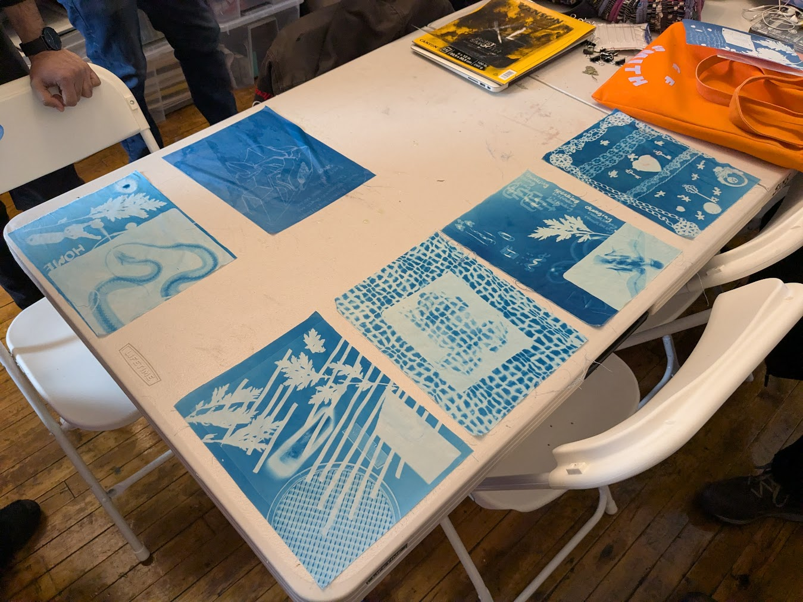

How would you describe your favorite tree to someone who had never seen it?

Framed around themes of data feminism and critical data studies, this workshop, led by Alissa Kushner and Star Ajasin, explores the choices behind how traditional datasets and metadata describe the world around us. Participants will poke through NYC Open Data’s most recent Street Tree Census, interrogating what it means to capture the essence of our urban environments into a dataset, questioning the choices, politics, and perspectives behind how data is chosen, organized, and labeled. We will then visit a tree closest to the site of the workshop and collect metadata not typically captured about it through the creation of cyanotype images (also known as sun prints), serving as a counter-method of slow and embodied data capture. Participants will leave the workshop with a more critical understanding of environmental data as well as a handmade cyanotype to take home with them.